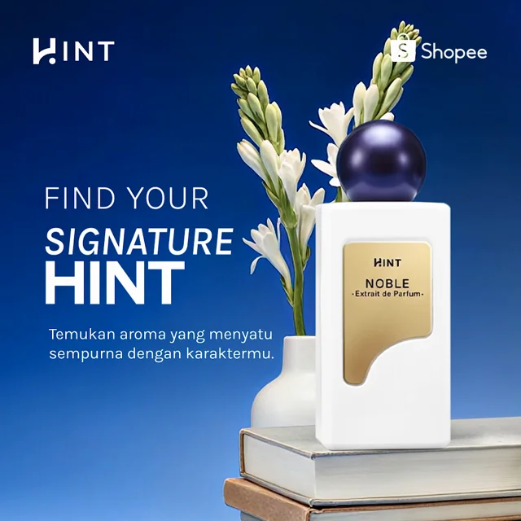
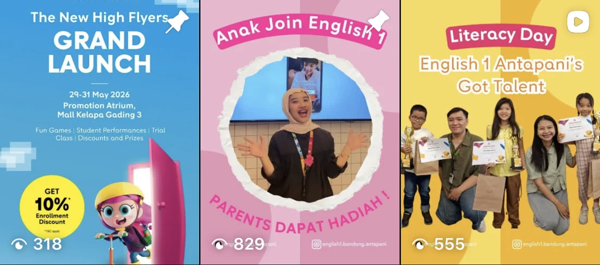
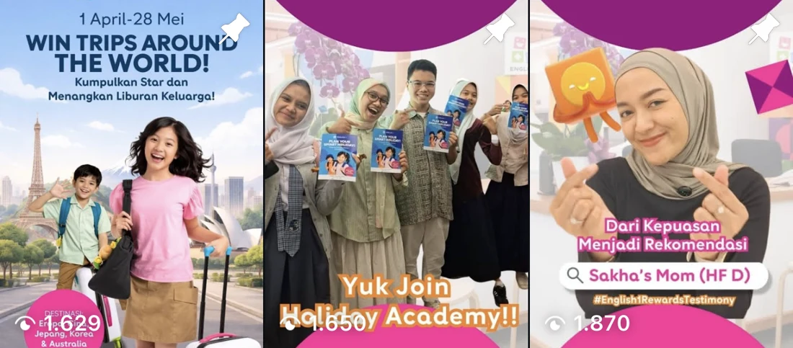
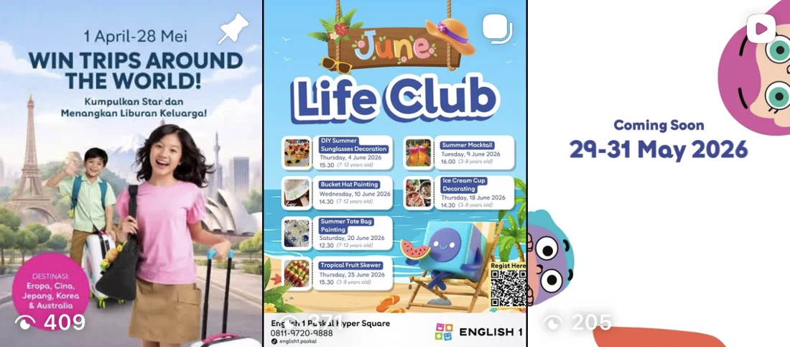
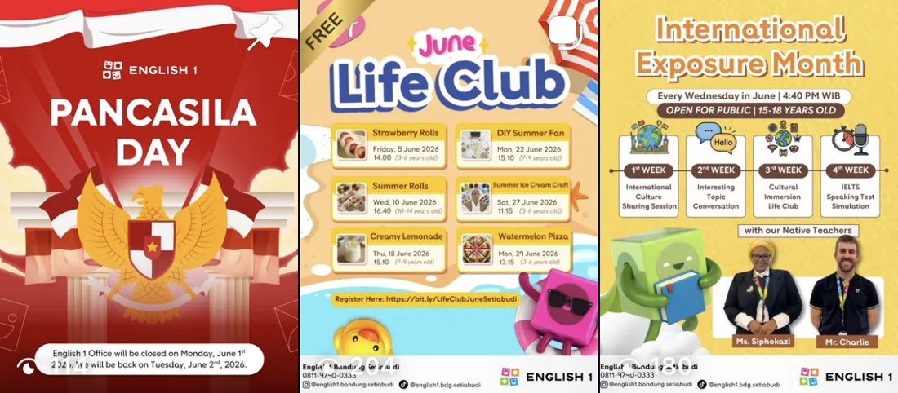
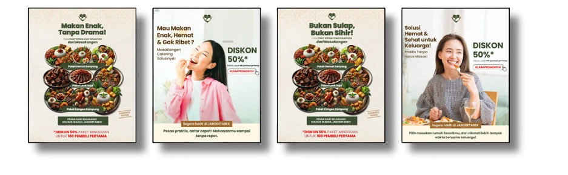

The work behind
the numbers.
Paid mediaAudience & message
Creative briefs
Campaign results make more sense with the decisions around them. Here’s how I review ads, adapt audiences and work with creative teams—and what the reports recorded.
HINT / TikTok conversion
September vs July 2026
English 1 Paskal / Meta Ads
April vs March 2026
English 1 Antapani / Meta Ads
April vs March 2026
Selected company outcomes are rounded from campaign and branch reporting. They describe aggregate results, not the isolated effect of one person or creative asset. NS means New Student.
From performance
review to the
next decision.
Beauty and fragrance e-commerce. Paid ads, reporting and CPAS creative briefing.
- Channels
- TikTok Ads / Product GMV Max
Shopee Insite / Meta Ads - My role
- Performance reviews, budget decisions, ad-level checks and creative briefs.
- Comparison
- July–September 2026
Creative examples: July–October
Start with the result.
I review ROAS alongside CPC and CPM, then look at the ad sets and individual ads behind the campaign total. The point is to decide what needs attention before the next delivery decision.
Continue, pause or request a refresh.
Within the allocated budget, I continue ads that perform and pause underperforming ads. On the creative side, I request refreshed visuals and use different captions for different audiences.
Read efficiency and volume together.
Conversion spend, attributed GMV and ROAS each tell part of the story. I keep the campaign scope clear and separate Product GMV Max from the wider reporting total.
Higher attributed GMV on lower conversion spend.
These are campaign-level outcomes. Creative production and e-commerce operations also contributed; COD activation was handled by the e-commerce team.
Five creative examples.
Different ways into the product.
My contribution was the creative brief and visual refresh request. The finished videos include production-team work and, for Cherise, creator footage.
Inside the Noble video: opening → product → shopping prompt

Introduce the idea.
“Find your signature HINT” introduces the message with the product as the main visual.
Describe the fragrance.
Noble is presented through its Floral Oriental profile: Jasmine, Sandalwood and Musk.
Give the next step.
Several HINT products appear with a “Shop now” prompt.
This breakdown describes the finished material produced from my brief. No asset-level ROAS, editing or filming credit is claimed. The video is approximately nine seconds long.
One brand.
Four centers.
Local context.
Antapani, Banda, Paskal and Setiabudi. Meta Ads and content for the events each branch would run.
- Channel
- Meta Ads
- Scope
- Four Bandung centers
Fixed monthly allocation - My role
- Targeting and audience adjustments, reporting and content production.
Use the event as the starting point.
Each center had a different upcoming event. I adapted location, radius, age, interests and audience selection to the center and the event being promoted.
Work within the allocation.
The monthly allocation was fixed. My optimization work focused on audience choices and their relevance to the branch event, rather than assuming that more spend was the answer.
Keep leads and enrollment separate.
CPL describes lead acquisition. Cost per NS uses branch spend divided by reported New Students. I read both, while keeping the wider branch enrollment process in view.
Nearly four times the reported leads.
Actual spend was similar across the comparison. Lead acquisition improved, but the tracker did not show New Student growth during the same window.
A lower reported Cost per NS.
Reported leads increased within the 20–30% range. Enrollment is a branch outcome involving the wider student acquisition process; the tracker does not specify its attribution method.
The same local context
also shaped the content.
Monthly content plans, briefs, hooks, voice-over lines, scene directions, shooting, talent direction and editing.




One meal story.
Two kinds of intent.
MasaKangen connected home-style meals with people living away from home. Four-day campaigns in 2025.

Discovering a meal.
Searching for one.
Our team used interest and lookalike audiences on Meta, alongside segmented targeting and tailored Google Search copy. My work covered audience and message planning, creative collaboration, monitoring and optimization.
Meta: 9,605 impressions. Google: 1,233 impressions. These are team training-project outcomes, not a client engagement.